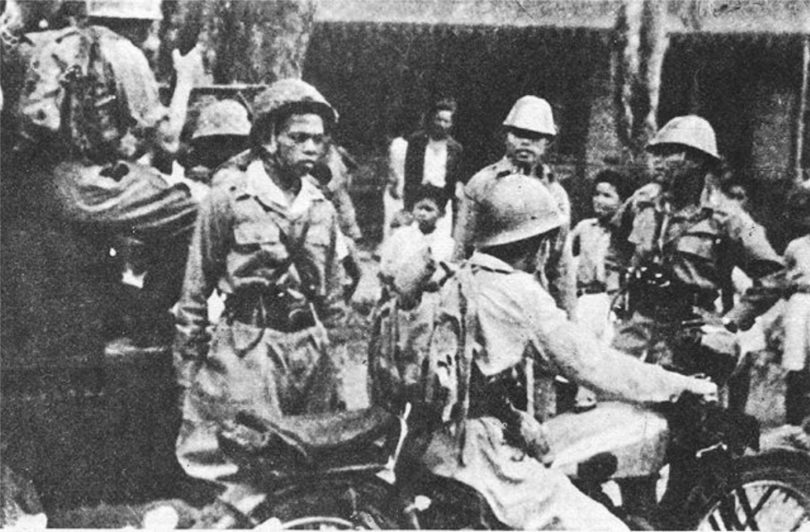

BAB X
Proklamasi Kemerdekaan dan Proses Pengakuan Kedaulatan Indonesia

Indonesia pada Masa Awal Kemerdekaan
Medan pertempuran di Asia Pasifik mengalami titik balik (turning point) pada saat sekutu berhasil memukul mundur Jepang dalam pertempuran di Laut Karang pada 7-8 Mei 1942.
Setelah itu sekutu merebut pangkalan perang Jepang satu persatu.
Mulai dari Kwajelein, pangkalan laut di Guam, dan Saipan serta pangkalan perang lainnya. Akibat masalah ini muncullah krisis kabinet di Jepang. Perdana Menteri Jenderal Tojo diganti oleh Jenderal Koiso Kuniaki. Menyadari hal itu, perdana menteri Koiso Kuniaki memandang perlu untuk mengikutsertakan kekuatan pribumi dalam setiap peperangan yang melibatkannya.
Di Indonesia, Jepang membentuk beberapa kesatuan militer dan semi militer seperti Heiho, Peta, Seinendan, Keibodan, dan Fujinkai. Untuk memikat hati rakyat Indonesia, pada 7 September 1944 Perdana Menteri Koiso mengeluarkan janji kemerdekaan. Dalam pidatonya di depan parlemen Jepang, Koiso menjanjikan kemerdekaan kepada bangsa Indonesia di kemudian hari.

Peristiwa Rengasdengklok adalah peristiwa penculikan yang dilakukan oleh sejumlah pemuda antara lain Soekarno, Wikana, Aidit, dan Chaerul Saleh dari perkumpulan "Menteng 31" terhadap Soekarno dan Hatta.
Peristiwa ini terjadi pada tanggal 16 Agustus 1945 pukul 03.00 WIB, Soekarno dan Hatta dibawa ke Rengasdengklok, Karawang, untuk kemudian didesak agar mempercepat proklamasi kemerdekaan Republik Indonesia, sampai dengan terjadinya kesepakatan antara golongan tua yang diwakili Soekarno dan Hatta serta Mr. Achmad Subardjo dengan golongan muda tentang kapan proklamasi akan dilaksanakan terutama setelah Jepang mengalami kekalahan dalam Perang Pasifik.
Menghadapi desakan tersebut, Soekarno dan Hatta tetap tidak berubah pendirian. Sementara itu di Jakarta, Chaerul dan kawan-kawan telah menyusun rencana untuk merebut kekuasaan. Tetapi apa yang telah direncanakan tidak berhasil dijalankan karena tidak semua anggota PETA mendukung rencana tersebut.
Proklamasi kemerdekaan Republik Indonesia rencananya akan dibacakan oleh Bung Karno dan Bung Hatta pada hari Jumat, 17 Agustus 1945. Ada dua lokasi pilihan untuk pembacaan teks proklamasi, yaitu Lapangan IKADA (yang sekarang telah menjadi Lapangan Monas) atau rumah Bung Karno di Jl. Pegangsaan Timur No. 56. Rumah Bung Karno akhirnya dipilih untuk menghindari kericuhan antara penduduk dan tentara Jepang karena tentara-tentara Jepang sudah berjaga-jaga di Lapangan IKADA setelah mendapat informasi ada sebuah acara yang akan diselenggarakan di lokasi tersebut.
Teks Proklamasi disusun di Rengasdengklok. Awalnya, Bung Karno dan Bung Hatta ditempatkan di sebuah gubuk tua, pinggir kali dekat sawah yang tak layak kondisinya. Atas usulan KH. Darip pejuang dari Klender kepada Soekarno dan kawan-kawan, agar Bung Karno dan Bung Hatta ditempatkan di tempat yang layak, maka dipilih lah rumah saudagar Tionghoa bernama Djiaw Kie Siong. Bendera Merah Putih sudah dikibarkan para pejuang di Rengasdengklok pada Kamis tanggal 16 Agustus, sebagai persiapan untuk proklamasi kemerdekaan Indonesia.
Karena tidak mendapat berita dari Jakarta, maka Jusuf Kunto dikirim untuk berunding dengan pemuda-pemuda yang ada di Jakarta. Namun sesampainya di Jakarta, Kunto hanya menemui Wikana dan Mr. Achmad Soebardjo, kemudian Kunto dan Achmad Soebardjo ke Rengasdengklok untuk menjemput Soekarno, Hatta, Fatmawati dan Guntur.
Achmad Soebardjo mengundang Bung Karno dan Hatta berangkat ke Jakarta untuk membacakan proklamasi di Jalan Pegangsaan Timur No. 56, rumah Bung Karno. Pada tanggal 16 Agustus tengah malam rombongan tersebut sampai di Jakarta.
Keesokan harinya, tepatnya tanggal 17 Agustus 1945 pernyataan proklamasi dikumandangkan dengan teks proklamasi Kemerdekaan Indonesia yang diketik oleh SayutMelik menggunakan mesin ketik yang "dipinjam" (sebetulnya diambil) dari kantor Kepala Perwakilan Kriegsmarine, Mayor (Laut) Dr. Hermann Kandeler.
Pada tanggal 16 Agustus 1945, rombongan Soekarno-Hatta tiba kembali di Jakarta sekitar pukul 23.00 WIB. Semula tempat yang dituju untuk perumusan naskah proklamasi kemerdekaan Indonesia adalah di ruang makan Rumah Laksamana Maeda. Tiga eksponen pemuda, yaitu Sukarni, Sudiro, dan B.M. Diah menyaksikan Soekarno, Moh. Hatta, dan Ahmad Soebardjo membahas perumusan naskah proklamasi. Kalimat pertama rumusan itu merupakan buah pikir Soekarno dan Ahmad Soebardjo yang diambil dari teks Pembukaan Undang-Undang Dasar 1945. Sebagai hasil pembicaraan mereka bertiga, diperoleh rumusan tulisan tangan Soekarno seperti berikut ini. Pada tanggal 17 Agustus 1945 pukul 04.00 WIB Soekarno membacakan rumusan naskah proklamasi kemerdekaan yang langsung disetujui oleh hadirin.

Pernyataan Proklamasi Kemerdekaan Indonesia
Penyebaran Berita Proklamasi Kemerdekaan Indonesia
Terbentuknya Negara dan Pemerintahan Republik Indonesia
1). Pembentukan Badan Penyelidik Usaha Persiapan Kemerdekaan
Indonesia (BPUPKI)
Berkaitan dengan janji yang telah dikemukakan oleh pihak Jepang, pada
1 Maret 1945, diumumkan pembentukan Badan Penyelidik Usaha-Usaha
Persiapan Kemerdekaan (BPUPKI). BPUPKI terdiri atas 63 orang yang
diketuai Dr. K.R.T. Radjiman Wedyodiningrat. Dalam aktivitasnya, BPUPKI
mengadakan sidang sebanyak dua kali. Sidang pertama dilaksanakan pada
29 Mei–1 Juni 1945 dan sidang kedua dilaksanakan pada 10–17 Juli 1945.
a). Sidang Pertama BPUPKI
Sidang BPUPKI yang pertama membahas tentang rumusan dasar negara
Indonesia merdeka. Untuk mendapatkan rumusan dasar negara yang benarbenar tepat,
maka acara dalam sidang ini adalah mendengarkan pidato dari
tiga tokoh utama pergerakan nasional Indonesia, yaitu Mr. Mohammad Yamin,
Mr. Soepomo, dan Ir. Soekarno.
Gagasan mengenai dasar negara yang dikemukakan oleh masing-masing tokoh:
Gagasan mengenai rumusan lima sila dasar negara Republik Indonesia yang dikemukakan oleh Ir. Soekarno pada tanggal 1 Juni 1945 dikenal dengan istilah Pancasila.
Peristiwa ini dikenang dengan ditetapkannya tanggal 1 Juni sebagai hari lahirnya Pancasila.
Sampai akhir masa sidang pertama ini, belum ditemukan kesepakatan rumusan dasar negara Republik Indonesia yang benar-benar tepat. Oleh karena itu, dibentuklah suatu panitia kecil yang beranggota Sembilan orang yang diketuai oleh Ir. Soekarno. Panitia ini dinamakan Panitia Sembilan. Tugasnya adalah mengolah usulan dari anggota BPUPKI mengenai dasar negara Republik Indonesia.
Pertemuan Panitia Sembilan menghasilkan rumusan yang disebut Jakarta Charter atau Piagam Jakarta, yang disetujui secara bulat dan ditandatangani pada 22 Juni 1945
b). Sidang Kedua BPUPKI

Sidang kedua membahas rencana Undang-Undang Dasar (UUD). Sidang ini juga membicarakan bentuk negara. Mengenai bentuk negara, mayoritas peserta sidang setuju dengan bentuk Republik. Selanjutnya BPUPKI membentuk panitia kecil yang beranggotakan 19 orang untuk mempercepat kerja sidang. Panitia ini bernama Panitia Perancang UUD yang diketuai Ir. Soekarno. Panitia ini menyepakati Piagam Jakarta dijadikan sebagai inti pembukaan UUD. Panitia Perancang UUD juga membentuk panitia lebih kecil beranggotakan 7 orang yang diketuai oleh Soepomo untuk merumuskan batang tubuh UUD.
Pada tanggal 14 Juli 1945 Panitia Perancang UUD yang diketuai Soekarno melaporkan hasil kerja panitia yaitu:
• Pernyataan Indonesia Merdeka.
• Pembukaan Undang-Undang Dasar.
• Batang Tubuh UUD.
Dengan demikian, Panitia Perancang UUD telah selesai melaksanakan tugasnya. Pada tanggal 16 Juli 1945, BPUPKI menerima dengan bulat naskah Undang-Undang Dasar yang dibentuk Panitia Perancang UUD.
2). Pembentukan Panitia Persiapan Kemerdekaan Indonesia (PPKI)

Pada 7 Agustus 1945 BPUPKI dibubarkan karena dianggap telah menyelesaikan tugasnya, yaitu menyusun rancangan Undang-Undang Dasar bagi negara Indonesia. Selanjutnya dibentuklah Panitia Persiapan Kemerdekaan Indonesia (PPKI). Ketua PPKI adalah Ir. Soekarno dan wakilnya Drs. Mohammad Hatta, sebagai penasihat diangkat Mr. Achmad Subardjo. Pada awal pembentukannya, jumlah anggota PPKI terdiri atas 21 orang, kemudian ditambah 6 orang, jadi jumlahnya 27 orang. Tugas utama PPKI adalah mempersiapkan segala sesuatu berkaitan dengan keperluanpergantian kekuasaan dari pihak Jepang kepada bangsa Indonesia.
Peristiwa Heroik Sekitar Proklamasi Kemerdekaan Indonesia


- Kedatangan Sekutu dan NICA di Indonesia
- Agresi Militer Belanda ke Republik Indonesia
- Perang Gerilya Melawan Agresi Militer Belanda
- Diplomasi Indonesia Menarik Dukungan Internasional dan Menghadapi Sekutu dan NICA
- Penandatanganan Kedaulatan RIS Pada 27 Desember 1949